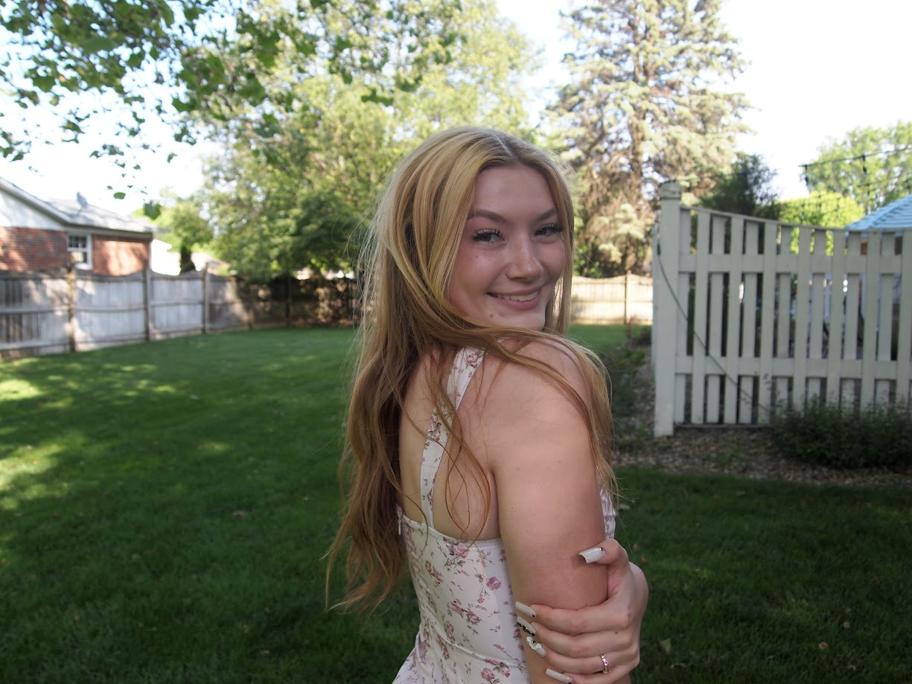

A LITTLE ABOUT ME
Hi, I’m Eve VanMeter.
The person behind the camera, rooting for you every step of the way.

PHOTOGRAPHER · YOUR PERSONAL HYPE PERSON
Good photos happen when you can just be.
Hi! I’m so glad you’re here. I’m a photographer who loves warm light, happy chaos, and the little details that make a moment feel like yours.
My approach is relaxed and thoughtful. I’ll offer gentle direction when you need it, then give you room to laugh, connect, and be present. No pressure to perform just space to make something honest together.
I graduated High School at Perry Meridian. I am now going to college at IU indianapolis and I'm majoring in Media Arts and Science. When I’m not taking photos, you can usually find me hanging out with my boyfriend or friends/family. I also really enjoy hiking and reading books!
I’d love to hear your story ↗THE WAY I SEE IT
Less posing. More presence.
You don’t need to know what to do with your hands. You just need to show up as yourself. I’ll take care of the rest.